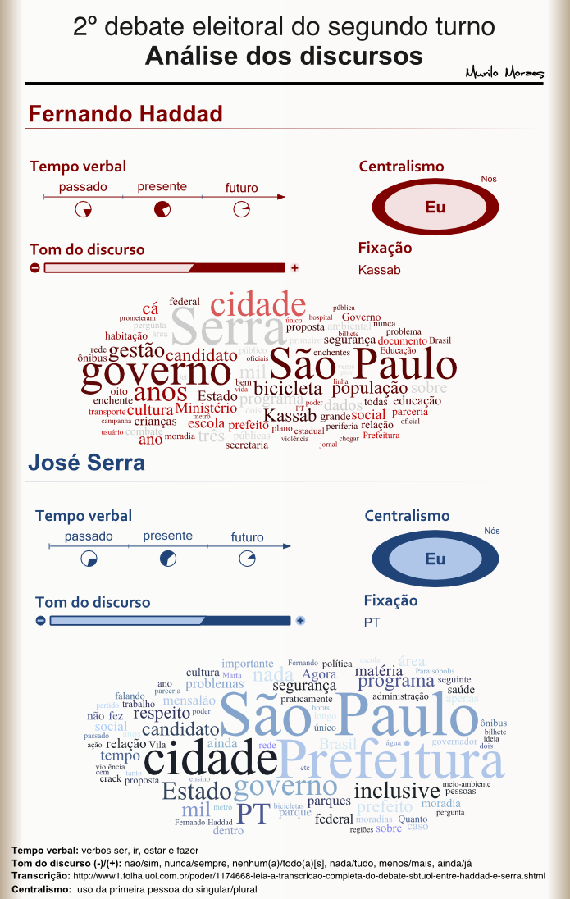

Eleições / Arquivo
Segundo debate do segundo turno – São Paulo (SBT)
As palavras dos candidatos no segundo debate do segundo turno da eleição paulistana de 2012.
A reconstrução conta palavras na transcrição da Folha por candidato e bloco. A contagem depende das regras de tokenização.
Publicação original
Análise quantitativa do discurso empregado por cada candidato no segundo debate do segundo turno das eleições municipais de São Paulo, que ocorreu quarta-feira (24/10/2012 – 18h30).
Novamente, utilizei a transcrição do debate da Folha de São Paulo, o Inkscape (http://inkscape.org/) para fazer o infográfico e o Wordle para o mapa de palavras (http://www.wordle.net/ – livre).

